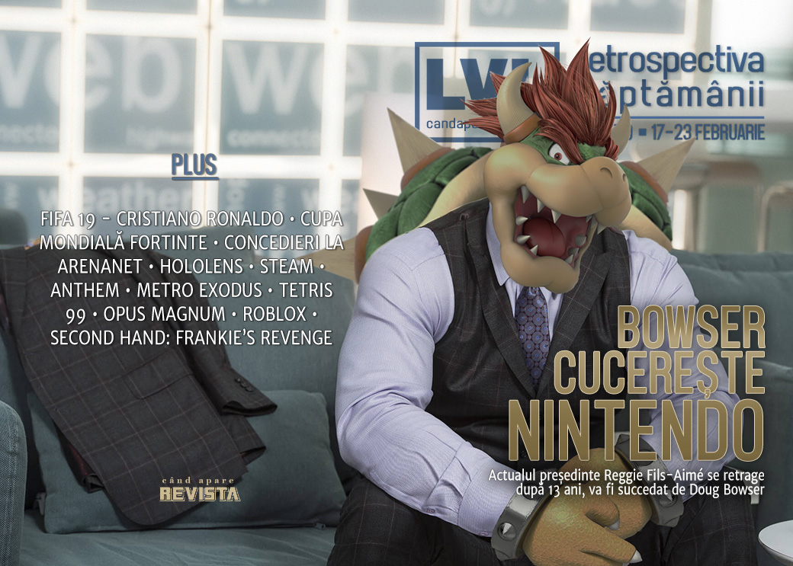

Retrospectiva săptămânii 17-23 februarie 2019
Președintele Nintendo America se retrage, lăsându-i locul vicepreședintelui Bowser. EA îl șterge pe Cristiano Ronaldo de pe coperțile FIFA 19, ArenaNet anunță concedieri, iar angajații Microsoft protestează împotriva folosirii HoloLens în sisteme militare, Anthem e lansat în sfârșit pentru toată lumea, dar reacțiile nu sunt cele așteptate, John Romero amână SIGIL, iar Valve scoate conținutul video non-gaming de pe Steam.
Linkuri rapide:
- Știri
- Articole (critică, dev, design)
- Made în România
- Anunţuri şi lansări de jocuri
- Prăvălii de jocuri

Ştiri
- Președintele Nintendo America, Reggie Fils-Aimé, a anunțat că se retrage de la cârma companiei în din aprilie. El va fi succedat de vicepreședintele de vânzări și marketing, un anume Doug Bowser. Da, pe următorul președinte al Nintendo îl cheamă Bowser. (Kotaku, Destructoid, Eurogamer, The Guardian, The Verge, GamesIndustry.biz)
- Ubisoft produce un serial bazat pe jocul Skull & Bones, deși acesta încă nici n-a fost lansat. Serialul va fi produs în colaborare cu Atlas Entertainment și va avea o distribuție în principal feminină. (The Hollywood Reporter, Eurogamer, Variety)
- Electronic Arts l-au scos pe Cristiano Ronaldo de pe coperta (și din meniul) jocului FIFA 19 și l-au înlocuit cu jucătorii Neymar, Paulo Dybala și Kevin de Bruyne, la mai puțin de jumătate de an de la lansarea jocului, motivul oficial fiind legat de Liga Campionilor, dar se speculează că ar avea mai degrabă legătură (și) cu scandalurile iscate în jurul lui Cristiano Ronaldo. (Eurogamer, GamesIndustry.biz, PCGamesN)
- Paradox și Microsoft lansează ”Paradox Mods”, o platformă de modding care va facilita distribuția de moduri pentru titlurile Paradox atât pe PC cât și pe Xbox. (PCGamesN, Games Informer, GamesIndustry.biz, PC Gamer, Gamasutra, Wccf tech, Polygon)
- Epic anunță o „cupă mondială” pentru Fortnite cu premii totale în valoare de 100 de milioane de dolari. (Games Informer, Eurogamer, The Verge, Variety)
- ArenaNet, dezvoltatorul seriei Guild Wars, se pregătește de restructurări și concedieri colective. (Gamasutra, PC Gamer, GamesIndustry.biz, Kotaku)
- Angajații Microsoft protestează împotriva unui contract încheiat cu armata americană pentru dezvoltarea unui sistem de realitate augmentată pazat pe tehnologia HoloLens, susținând că nu vor să participe la crearea unor „arme de război”. (Polygon, RPS, PC Gamer, Games Informer)
Articole (critică, dev, design)
- Apex Fish in a Small Pond (The Psychology of Video Games)
- How loot boxes hooked gamers and left regulators spinning (The Verge)
- Why the U.S. Army is Using Esports for Recruitment (GameDaily.biz)
- Slay the Spire and Into the Breach’s greatest trick is that they hide nothing from you (PCGamesN)
- How one gamer relearnt how to play after a shooting left him blind (Eurogamer)
- When did cutscenes start looking worse than actual video games? (The Verge)
- The Video Game Is You: An Approach to Video Game Criticism (Variety)
- Why read video game reviews? (VideoGamer)
- Linux gaming is on a life-support system called Steam (Engadget) —
Actualitate
- Amid game industry layoffs, AFL-CIO says it’s time for workers to organize (Polygon)
- Unearthing Hardcore, DICE’s long-lost Sega Genesis shooter (The Verge)
Președintele Nintendo America se retrage
- A short list of Reggie Fils-Aime’s best moments at Nintendo (Shacknews)
- How Reggie Fils-Aime Became A Nintendo Legend (Kotaku)
- Reggie Fils-Aimé: a corporate executive we liked (VideoGamer)
- Kicking Ass and Taking Names: Reggie Fils-Aime's Legacy at Nintendo (USgamer)
- Reacții:
Lansarea Anthem
- EA Should Call Anthem's Premier Access Period What It Is: A Beta Test Gamers Pay For (USgamer)
- Did Anthem’s early access week do more harm than good? (Polygon)
- EA’s style of ‘early access’ sucks (PC Gamer)
Not-a-review
- Metro Is Gaming's Most Interesting Post-Apocalypse (Games Informer)
- Nintendo Can Take their Time with the Next Original 2D Mario Title (Hardcore Gamer)
- Civilization Has Helped Me Feel Slightly Less Terrible About Climate Change (Kotaku)
- 'Far Cry New Dawn,' 'Metro Exodus,' and the Post-Apocalypse We Need (Motherboard)
- How Devotion, Twitch’s hottest horror game, builds on the genre’s legacy (The Verge)
- The Stanley Parable (Critical Distance)
Anthem
- Searching for BioWare, somewhere in Anthem’s Fort Tarsis (Eurogamer)
- How is BioWare’s Anthem beta so terrible at telling stories? (A.V. Club)
Tetris 99
- The depth of Tetris 99’s mechanics do the impossible, improve a perfect game (Destructoid)
- Why Tetris 99 is one of Nintendo’s most important new games (GamesIndustry.biz)
- Tetris Finds a Way to Surprise Once More in Tetris 99 (Hardcore Gamer)
- Tetris 99 hides the way it works - and that’s brilliant (Eurogamer)
Industrie
- Was PlayStation’s E3 criticism justified? (GamesIndustry.biz)
- ‘Roblox’ Digital Civility Effort Teaches It’s Cool to be Kind (Variety)
- The Future of Gaming Is Subscription (Variety)
- Paratopic haunts the walking sim with verbs and violence (GamesIndustry.biz)
- Q&A: Design lessons learned from a decade at Nintendo’s EAD (Gamasutra)
- Crackdown 3 shows a vision of the future (GamesIndustry.biz)
- Amy Hennig interview — Surviving the trauma of making a video game and inspiring newcomers (VentureBeat)
Istorie, retrospectivă
- The past, present and future of OlliOlli (Eurogamer)
- The head games of Vampire: The Masquerade - Bloodlines (GamesIndustry.biz)
- Saved Game History: Battery Backups, Memory Cards, and the Cloud (Tedium)
Dev, making of, mecanici
- Tech Interview: Metro Exodus, ray tracing and the 4A Engine’s open world upgrades (Eurogamer)
- Road to the IGF: Zachtronics’ Opus Magnum (Gamasutra)
- Categories of Action in Strategy Gaming (Gamasutra)
- Eastshade focusing on the bigger picture (GamesIndustry.biz)
- The Never-ending Challenge of Asymmetrical Design (Gamasutra)
- The Horror Design of an Alpha Antagonist (Gamasutra)
- Aerodynamics of Just Cause 4 (Gamasutra)
Design, world-building, artă
- The Rise Of The Video Game Selfie (Kotaku)
- In Defense of Videogame Selfies (Yes, Really) (Wired)
- The Story Behind The Outer Worlds’ Amazing Art (Games Informer)
- How Viktor Antonov turned from building cities to planets (Eurogamer)
- A Panel Shaped Screen: Rediscovering Moebius, the artist who influenced Sable (and a million other games) (RPS)
- The Joy Of laying down your arms in theHunter: Call of the Wild (RPS)
- Reoccupying Ruins (SlowRun)
- What videogame maps can tell us about their worlds (RPS)
Made în România
- Rikodu dau drumul la înscrieri pentru perioada de closed beta pentru jocul lor Second Hand: Frankie’s Revenge. (Site Rikodu)
Anunţuri şi lansări de jocuri
- The Bard’s Tale 4 is getting a major Director’s Cut update in June (Eurogamer)
- Heroes of Newerth’s latest major patch will be its last (PCGamesN)
Anunţate
- Deck of Ashes (GameSpace)
- Technobabylon: Birthright (PC Gamer)
- Iratus: Lord of the Dead (DSOGaming )
- Haven (Gematsu)
- Darkest Dungeon 2 (Destructoid)
- Airborne Kingdom (Eurogamer)
Acum cu dată de lansare
- Tech Support: Error Unknown: 27 februarie (GameSpace)
- Space Engineers (iese din early): 28 februarie (RPS)
- Don’t Escape: 4 Days in a Wasteland: 11 martie (Hardcore Gamer)
- Baba Is You: 13 martie (Destructoid)
- Fenimore Fillmore: 3 Skulls of the Toltecs Remaster: 15 martie (DSOGaming )
- Where the Bees Make Honey: martie (VGChartz)
- Rise of Industry: 2 mai (Hardcore Gamer)
- Guilty Gear 20th Anniversary Pack: 16 mai (VGChartz)
- Age of Wonders: Planetfall: 6 august (PC Gamer)
Amânate
- SIGIL, noul episod de Doom al lui John Romero, amânat până în aprilie (Shacknews)
- Untitled Goose Game amânat până mai târziu (PC Gamer)
Lansate
- 19 februarie: Yakuza Kiwami (Steam)
- 19 februarie: Devotion (Steam)
- 19 februarie: STEINS;GATE ELITE (Steam)
- 20 februarie: Planetary Dustoff (early access) (Steam)
- 21 februarie: Batalj (Steam)
- 22 februarie: Anthem (EA Store)
- 22 februarie: Koi (Steam)
Prăvălii de jocuri
Știri
- Steam is getting rid of all its non-gaming videos (PC Gamer)
- New Steam About Page Details the Platform’s Many Features (TechRaptor)
- 2K Games signs deal to bring titles to Discord (PCGamesInsider.biz)
Jocuri noi în catalog
Jocuri gratis și free weekends
- Trials Rising rides into a free open beta weekend today (RPS)
- Battletech, the turn-based tactical game of mech combat, is free for the weekend (PC Gamer)
- Thimbleweed Park is free on the Epic Games Store (PC Gamer)
- Offworld Trading Company’s multiplayer mode is going free for everyone (PC Gamer)
Reduceri și promoții
- GOG marks the Year of the Pig with a week-long Lantern Festival Sale (PC Gamer)
- Fanatical BundleFest 2019 brings 5 days of Steam bundle deals (Shacknews)
- Best PC gaming deals of the week – 22nd February 2019 (RPS)
- Square Enix Steam sale discounts almost everything by 50% or more (PC Gamer)
- Weekend PC Download Deals for Feb. 22: Steam Square Enix sale (Shacknews)
- Weekend Console Download Deals for Feb. 22: First RDR2 discounts (Shacknews)
- Fanatical Brawler Bundle Offers 4 Games for $3 (Hardcore Gamer)
Retrospectiva săptămânii este rubrica duminicală în care trecem în revistă evenimentele săptămânii de pe frontul de gaming: știri şi articole (scrise de alții, bineînțeles, că e mai ușor aşa), industrie, lansări, oferte de jocuri, toate numai de savurat la cafeaua de duminică dimineața.
De asemenea, rubrica e deschisă oricui vrea și poate contribui. Dacă ai citit vreun articol sau vreo știre interesantă și crezi că merită incluse în retrospectiva săptămânii, te așteptăm pe forum pe unul dintre topicurile dedicate: Știri, Articole, Gaming România].